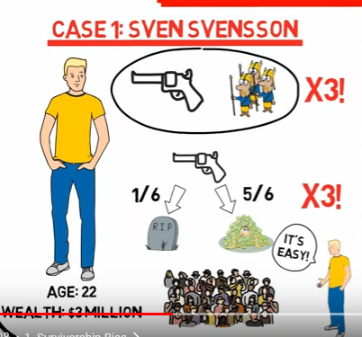
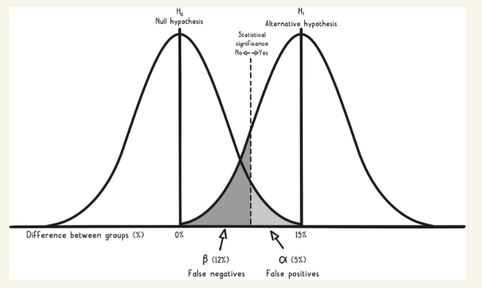
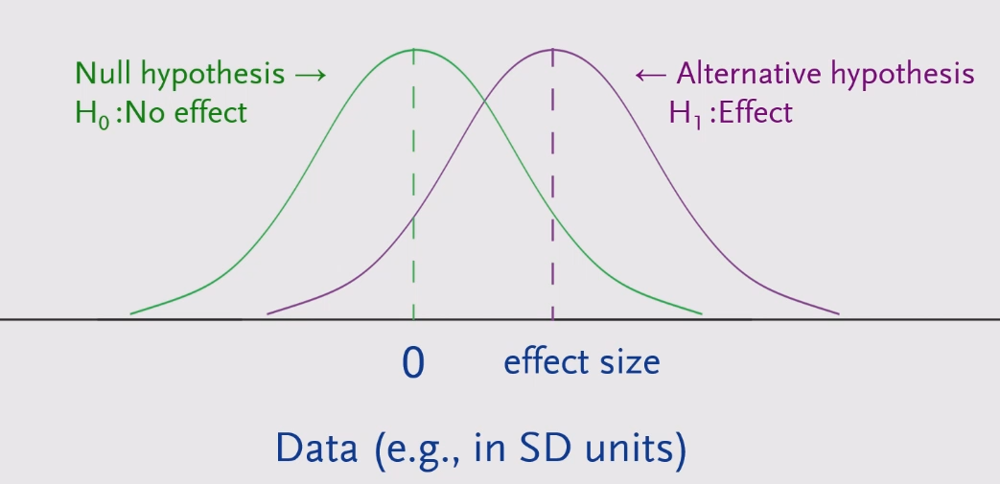

Survivor ship bias


Deductive reasoning (from general to specific)

Focus on avoiding mistakes instead of trying to be right all the time
-
Try to be consistently not stupid.
-
Focus on what you don't want to do (e.g. not investing in...)
-
Avoid disaster (e.g. running out of money)
Stay in circle of competence
-
Know what you don't know
-
Look for evidence that goes against your conclusion/view
Don't forget about randomness as a cause
When bad things happen, we try to find causal explanations or something to blame. The more unexpected or negative we find an event, the more likely we are to look for explanations. We underestimate the influence of randomness.
Don't mistake cause and effect consider that a cause can have multiple effects and vice versa
We have tons of problems. We are losing customers, we can\'t deliver on time, our inventory system doesn\'t work.
What is the core cause of these problems? Many times when we have a lot of problems, there may be one common reason for them all. When dealing with problems we must focus on what we want to achieve and make sure that we address the underlying cause and not act on symptoms that may look like causes. Maybe the symptoms were due to wrong policies or measuring instruments or goals, etc.
Think about opportunity cost
-
If you say yes to one thing you say no to a million others.
-
Don't compare investments that are below your baseline interest
Look for positive feedback loops
E.g. more creates more
Could be also combining multiple reinforcing positive factors (coca-cola)
Learn from the masters in your field their mistakes and experiences
When adopting from someone else make sure to understand the context they were living in / using when choosing their mindset/processes.
Use multi-disciplinary approaches to solve problems
Don't be the man with the hammer but chose the mental model(s) appropriate for the situation.
Kelly formula for optimal betting size
Coin flip:
-
Heads = 60% win 100%
-
Tails = 40% lose 100%
-
Edge = Probability of winning * 2 -1 = .2
-
If the downside-case loss is less than 100%, as in the scenario above, a different Kelly formula is required: Kelly % = W/A -- (1 -- W)/B, where W is the win probability, B is the profit in the event of a win (20%), and A is the potential loss (also 20%).
Statistical decision theory

-
Hits and misses trade off by definition
-
Correct rejections and false alarms also trade off and..
-
Hits and false alarms and ..
-
Misses and correct rejections


-
Performance in a signal detection task depends on two parameters:
-
Criterion / Response bias / trigger-happiness / beta ß
-
Sensitivity / d\' (d-prime)
-
How separated the signal and noise distributions are (in standard > deviations)

-
Improving Sensitivity (Better than twiddling with response bias (ß))
-
Enhance the signal, reduce the noise
-
Better instruments
-
More reliable forensic methods
-
More sensitive diagnostic tests
-
Combinations of evidence

Applied to hypothesis testing



Correlation and causation
The correlation co-efficient measures the closeness of the data to the best fitting straight-line.
All r = .82

Simpsons paradox example note: The overall correlation was negative because more women applied to departments where the general acceptance rate was lower (hard to get into).
-
A cause must precede effect
-
If the effect still happens (to the same extend) after a potential cause is removed it was not (the only) cause. - There could be multiple causes that only work together to cause the effect though.

-
Effects might have multiple causes

-
Bayesian network
-

-

-
2. Exclude reverse causation by checking whether the correlation between > the B and A is greater at a later time as compared to an earlier time. > Compared to the same for A and B
-
E.g. does democracy lead to peace, or are countries at peace more > likely to become democratic?
Show correlation between Democracy at time 1 and Peace at time 2 > Peace at time 2 and Democracy time 1
-
3. Exclude confound
-
Partial/Multiple regression
-
Use randomized (subjects are assigned randomly to either group) controlled trial
-
If the intervention leads to a different outcome in one group only > it\'s likely caused by it.
Bayes Theorem
Refine probability of an event occurring based on prior (base) probability. You can home after a weekend and find someone else\'s underpants on your bed. How likely is it that your girlfriend has been cheating on you?

Quasi Bayes approach to forecasting

Prospect theory
As opposed to utility theory takes into consideration human preferences/biases (loss and risk aversion)
Prospect = Psychologically conceivable possibility

Common sources of mistakes and misjudgements
-
Base rate neglect
Not considering the prior/base rate probability when looking at test results


-
Bias from mere association - We automatically feel pleasure or pain when we connect a stimulus - a thing, situation or individual- with an experience we\'ve had in the past or with values or preferences we are born with.
John\'s supplier took him to the best steakhouse in town and picked up the check. The next time it was time to buy new supplies, John associated the supplier with pleasant feelings.
-
Merely because you associate some stimulus with earlier pain or > pleasure doesn\'t mean the stimulus will cause the same pain or > pleasure today. Past experiences are often context dependent.
-
Create a negative emotion if you want to end a certain behavior. If you want someone to stop smoking, one way could be to show them what they stand to lose. Terrifying pictures may cause them to associate smoking with death. An action that is reinforced becomes stronger over time. This is how habits, superstitions and addictions are created.
-
Underestimating the power of rewards and punishment - people repeat actions that result in rewards and avoid actions that they are punished for.
After a success, we become overly optimistic risk-takers. After a failure, we become overly pessimistic and risk-averse.
Praise is more effective in changing behavior than punishment. It is better to encourage what is right than to criticize what is wrong.
-
Underestimating bias from own self-interest and incentives.
People do what they perceive is in their best interest and are biased by incentives.
\"Never ask the village barber if you need a haircut.\"
Understand people\'s motivations. Money, status, love of work, reputation, position, power, envy? What are they rewarded or punished for? Are they benefiting or losing from the present system?
- Self-serving bias - overly positive view of our abilities and future. Includes over-optimism.
We see ourselves as unique and special and we have optimistic views of ourselves and our family. We overestimate the degree of control we have over events and underestimate chance.
When we fail, we blame external circumstances or bad luck. When others are successful, we tend to credit their success to luck and blame their failures on foolishness.
- Self-deception and denial- distortion of reality to reduce pain or increase pleasure. Includes wishful thinking.
We deny and distort reality to feel more comfortable, especially when reality threatens our self-interest.
-
Consistency tendency - being consistent with our prior commitments and ideas even when acting against our best interest or in the face of disconfirming evidence. Includes confirmation bias - looking for evidence that confirms our actions and beliefs and ignoring or distorting disconfirming evidence.
-
Deprival syndrome - strongly reacting (including desiring and valuing more) when something we like and have (or almost have) is (or threatens to be) taken away or \"lost.\" Includes desiring and valuing more what we can\'t have or what is (or threatens to be) less available.
-
Status quo bias and do-nothing syndrome - keeping things the way they are. Includes minimizing effort and a preference for default options.
Deciding to do nothing is also a decision. And the cost of doing nothing could be greater than the cost of taking an action.
- Impatience - valuing the present more highly than the future.
We give more weight to the present than to the future. We seek pleasure today at a cost of what may be better in the future. We prefer an immediate reward to a delayed but maybe larger reward.
-
Envy and jealousy.
-
Distortion by contrast comparison - judging and perceiving the absolute magnitude of something not by itself but based only on its difference to something else presented closely in time or space or to some earlier adaptation level. Also underestimating the consequences over time of gradual changes.
The grossly overpriced \$100 tie seemed reasonable after John bought the fairly priced \$1,500 suit.
-
Anchoring - over-weighing certain initial information as a reference point for future decisions.
-
Over-influence by vivid or the most recent information.
Accurate information is better than dramatic information. Back up vivid stories with facts and numbers.
Separate noise and chance events from what is important. Ask: Is it relevant? Does it make sense? Is it representative evidence? Was it a random event?
Trends may be wrong. Ask: Is it a permanent or temporary effect?
-
Omission and abstract blindness - only seeing stimuli we encounter or that grabs our attention, and neglecting important missing information or the abstract. Includes inattentional blindness.
-
Reciprocation tendency - repaying in kind what others have done for or to us like favors, concessions, information and attitudes.
-
Over-influence by liking tendency - believing, trusting and agreeing with people we know and like. Includes bias from over-desire for liking and social acceptance and for avoiding social disapproval. Also bias from disliking - our tendency to avoid and disagree with people we don\'t like.
-
Over-influence by social proof - imitating the behavior of many others or similar others. Includes crowd folly.
-
Over-influence by authority - trusting and obeying a perceived authority or expert. 19. Sensemaking - Constructing explanations that fit an outcome. Includes being too quick in drawing conclusions. Also thinking events that have happened were more predictable than they were.
-
Reason-respecting -- complying with requests merely because we\'ve been given a reason. Includes underestimating the power in giving people reasons.
Our need for making sense makes us even believe in nonsense.
-
Believing first and doubting later - believing what is not true, especially when distracted.
-
Memory limitations - remembering selectively and wrong. Includes influence by suggestions.
Keep records of important events.
-
Do-something syndrome - acting without a sensible reason.
-
Mental confusion from say-something syndrome - feeling a need to say something when we have nothing to say.
-
Emotional arousal- making hasty judgments under the influence of intense emotions. Includes exaggerating the emotional impact of future events.
-
Mental confusion from stress.
-
Mental confusion from physical or psychological pain, the influence of chemicals or diseases.
-
Over-influence by the combined effect of many psychological tendencies operating together.
Misjudgements based on principles from physics and mathematics
Systems thinking
-
Failing to consider that actions have both intended and unintended consequences. Includes failing to consider secondary and higher order consequences and inevitable implications.
-
Failing to consider the whole system in which actions and reactions take place, the important factors that make up the system, their relationships and effects of changes on system outcome.
Think about positive and negative feedback loops
-
Failing to consider the likely reactions of others - what is best to do may depend on what others do.
-
Failing to consider the implications of winning a bid - overestimating value and paying too much. (winners curse. The winner at an auction pays the highest price)
-
Overestimating predictive ability or using unknowable factors m making predictions.
Scale and limits
- Failing to consider that changes in size or time influence form, function and behavior.
Surface area increases at the square of length and volume at the cube of length
-
Failing to consider breakpoints, critical thresholds or limits
-
Failing to consider constraints - that a system\'s performance is constrained by its weakest link.
-
Size and frequency:
Statistics show that the frequency of some events and attributes are inversely proportional to their size. Big or small things can happen but the bigger or more extreme they get, the less frequent they are. For example, there are a few large earthquakes, fires, avalanches, or cities, but many small ones. There are a few billionaires but many millionaires.
Causes
- Not understanding what causes desired results.
What is the equation that achieves what we want to accomplish?
What factors cause what we want to achieve? Under what circumstances?
What causes business value?
-
Believing cause resembles its effect - that a big effect must have a big or complicated cause.
-
Underestimating the influence of randomness in bad or good outcomes.
-
Mistaking an effect for its cause. Includes failing to consider that many effects may originate from one common root cause.
-
Attributing outcome to a single cause when there are multiple causes.
-
Mistaking correlation for cause.
-
Failing to consider that an outcome may be consistent with alternative explanations.
-
Drawing conclusions about causes from selective data. Includes identifying the wrong cause because it seems the obvious one based on a single observed effect. Also failing to consider information or evidence that is missing.
-
Not comparing the difference in conditions, behavior and factors between negative and positive outcomes in similar situations when explaining an outcome.
\"Look at where the bullet holes are and put extra armor every place else. \" (think about all the planes that haven\'t come back)
\'The drug obviously worked since I used it and got better. \" But the same outcome could have happened without taking the drug. We need to consider both confirming and disconfirming evidence. Ask: What is the frequency of supporting cases compared to disconfirming cases? What is the relative frequency of this condition or disease in the population?
Two way contingency table
| Outcome | Yes | No |
|---|---|---|
| Prediction | ||
| Yes | Predicted yes and it yes | Predicted yes and it was no (false positive very common to avoid big negative consequences like not diagnosing appendix conditions) |
| No | Predicted no and it was yes (not common since it is avoided by false positives |
Predicted no and it is no |
Numbers and their meaning
- Looking at isolated numbers - failing to consider relationships and magnitudes. Includes not using basic math to count and quantify. Also not differentiating between relative and absolute risk.
\"Research shows that the new drug reduces the risk of getting the disease by 25%.\"
-
What benefits can be expected by taking the new drug?
-
Without the drug 20 people in 1 ,000 get the disease.
-
By taking the drug, the figure drops to 15 people in 1,000.
-
How efficient is the drug if we look at the absolute number of > people saved from the disease?
-
he reduction in absolute risk is 5 people in 1,000 (20-15) or 0.5%.
-
The reduction in relative risk or the relative number of people > saved from the disease is 25% (5120).
-
A 25% reduction only means something if many people are saved. How > many people need to take the drug in order to save one individual > from the disease? Since 5 people in 1,000 (or 1 in 200) are saved > from the disease by taking the drug, only one person out of 200 > that take the drug will be saved. For the other 199 people the > drug does not have any positive effect.
-
Underestimating the effect of exponential growth. Underestimating the time value of money.
Probabilities and number of possible outcomes
-
Underestimating risk exposure in situations where relative frequency (or comparable data) and/or magnitude of consequences is unknown or changing over time.
-
Underestimating the number of possible outcomes for unwanted events. Includes underestimating the probability and severity of rare or extreme events.
-
Overestimating the chance of rare but widely publicized and highly emotional events and underestimating the chance of common but less publicized events.
-
Failing to consider both probabilities and consequences (expected value).
-
Believing events where chance plays a role are self-correcting - that previous outcomes of independent events have predictive value in determining future outcomes.
-
Believing one can control the outcome of events where chance is involved.
-
Judging financial decisions by evaluating gains and losses instead of final state of wealth and personal value.
-
Failing to consider the consequences of being wrong.
We should never risk something we have and need for something we don\'t need.
Expectation
A lottery has 100 tickets. Each ticket costs \$10. The cash price is \$500. Is it worthwhile for Mary to buy a lottery ticket?
Expected value = p(win) * pay-off - p(losing) * pay-off(losing)
-
p(win) = 1% (100:1)
-
p(losing) = 99% (100:99)
-
pay-off win = 500\$
-
pay-off lose = 10\$
-
1% * 500\$ - 99% * 10\$ = -4.9\$ (lose -4.9 on every 10\$)
-
99% chance of losing 10% and 1% chance of winning 490\$
Scenarios
- Overestimating the probability of scenarios where all of a series of steps must be achieved for a wanted outcome. Also underestimating opportunities for failure and what normally happens in similar situations. (P1*P2*P3)
The more independent steps that are involved in achieving a scenario, the more opportunities for failure and the less likely it is that the scenario will happen.
The compensation we need for taking a risk is really a function of the wanted outcome in relation to all possible outcomes
-
Likelihood of rolling a die with a six four times in a row
-
Number of possible outcomes = 6^4^= 1296
-
Likelihood = (1/6)^4^ or 1/1296 = 0.077 %
-
If we have to invest 1\$ for every roll we need to pay 1296\$ on > average to win
Should you invest 100\$ in a start-up that has 40% probability of succeeding if a succeeding you win 500\$. Or put 25\$ in 4 (independent) start-ups with 40% of succeeding?
-
One company expected value = 500\$ * .4 - 100\$ * .6 = 140\$
-
Multiple companies
-
4* 500\$ * .4 - 4 * 25\$ * .6 = 750\$
-
60% p(failure)
-
60% failure happening 4 times in a row = (.6)^4^ = 12.96%
-
Chance of 40% event happening at least once = 100%-12.96% = 87.04%
- Underestimating the probability of systems failure - scenarios composed of many parts where system failure can happen one way or another. Includes failing to consider that time horizon changes probabilities. Also assuming independence when it is not present and/or assuming events are equally likely when they are not.
Unlikely things happen if enough time passes. An event that has one chance in 20 of happening in any given year (assume that the probability stay the same over time) is nearly certain to happen over 50 years
-
20:1 = 4.8% p(happening) = 1-.48 p(happening)
-
1-(1-.048)^50^ = 91.5%
Separate between independent and dependent events. The probability that an airplane navigation system works is 99% and the probability that the backup navigation system works is 90%. The probability that the backup system fails is not influenced by whether the primary system fails or not. The probability that neither navigation system works is one tenth of a percent (0.01 * .1). Navigation system reliability is therefore 99.9% (at least one navigation system will work).
- Not adding a factor of safety for known and unknown risks. Size of factor depends on the consequences of failure, how well the risks are understood, systems characteristics and degree of control.
Coincidences and miracles
-
Underestimating that surprises and improbable events happen, somewhere, sometime, to someone, if they have enough opportunities (large enough size or time) to happen.
Tossing tails 4 times in a row happens once for every (1/[math]::Pow(.5,20))-1 = 1,048,575.00 people
-
Looking for meaning, searching for causes and making up patterns for chance events, especially events that have emotional implications.
-
Failing to consider cases involving the absence of a cause or effect.
Reliability of case evidence
- Overweighing individual case evidence and under-weighing the prior probability (probability estimate of an event before considering new evidence that might change it) considering for example, the base rate (relative frequency of an attribute or event in a representative comparison group), or evidence from many similar cases. Includes failing to consider the probability of a random match, and the probability of a false positive and false negative. Also failing to consider a relevant comparison population that bears the characteristic we are seeking.
John testifies in court: \'1 witnessed the accident and the cab involved was green. \"
-
John\'s probability being right = 80%
-
Cab\'s population = 90 blue and 10 green
-
Prior probability (before John is witnessing) = 10%

Posterior % = (10*.8) / (90*.2) + (10*.8) = 8 / 26
Out of 100 cabs (90 blue and 10 green) John would identify 8 green one\'s a green and 18 blue one\'s as green. The likelihood that the cab was actually green when he is saying it was is 31% (8/26). It seems the cab involved is more likely to have been blue.
Misrepresentative evidence
-
Failing to consider changes in factors, context or conditions when using past evidence to predict likely future outcomes. Includes not searching for explanations to why past outcome happened, what is required to make past record continue, and what forces can change it.
-
Overestimating evidence from a single case or small or unrepresentative samples.
-
Underestimating the influence of chance in performance (success and failure).
-
Only seeing positive outcomes - paying little or no attention to negative outcomes and prior probabilities.
-
Failing to consider variability of outcomes and their frequency.
-
Failing to consider regression - in any series of events where chance is involved unique outcomes tends to regress back to the average outcome.